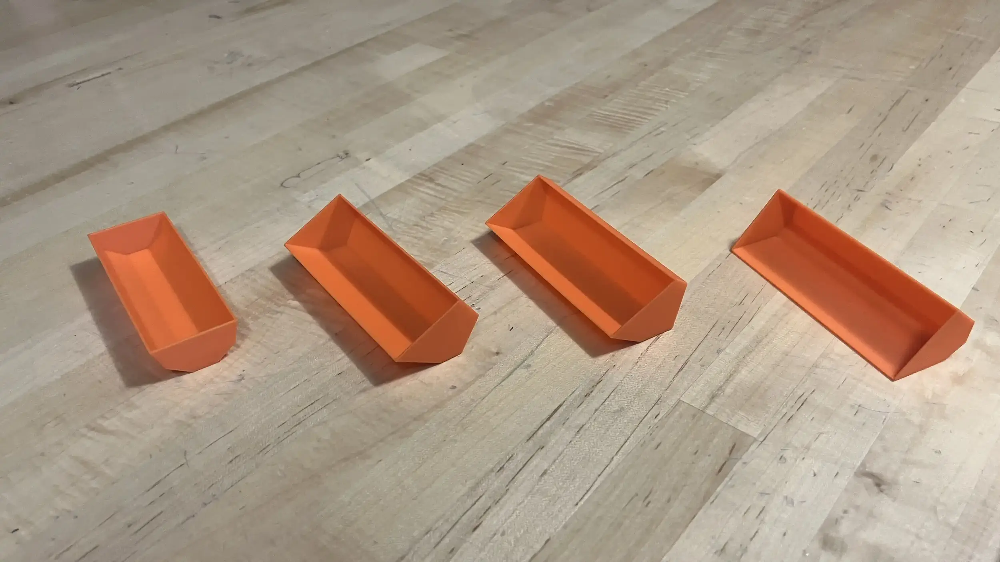

Structural Design & FEA
NASA Lunabotics
Designed and validated a front end loader bucket for excavation.

Overview
NASA Lunabotics is an annual competition hosted by NASA in which teams design and build rovers to excavate simulated lunar regolith and deposit it to construct berms. As a member of Northwestern's team, I am responsible for designing the front-end loader bucket that will attach to the excavation frame. This involved creating multiple design iterations using CAD in Onshape, performing finite element analysis (FEA) in SolidWorks to validate structural integrity under expected loads, and selecting appropriate materials and fasteners for manufacturing. Throughout the process, I presented at design reviews to ensure the bucket's performance and integration were successful. In May 2026, we will travel to NASA's Kennedy Space Center to compete.
I began by creating concept sketches and CAD models of the bucket, exploring different geometries and configurations. I 3D-printed miniature prototypes to evaluate each design (see Fig. 1.). After selecting a design and adapting it for bent sheet-metal manufacturing, I modeled it in Onshape using parametric variables to efficiently iterate on dimensions ranging from overall length, width, and height to bolt-hole sizes and flange lengths. I used Onshape's sheet metal tools and sourced fasteners and pivot mounts from McMaster-Carr. See Fig. 2. and Fig. 3. for CAD views of the design. To optimize strength, I incorporated ribs and a reinforced backplate at the linear actuator attachment point. While designing, I communicated with the other members of the excavation team to ensure compatibility with the frame and mount positions. See Fig. 4. and Fig. 5. for CAD views of the bucket integrated into the full rover assembly.
I performed FEA to validate the design under several loading conditions including maximum regolith capacity and peak forces on the front edge during ground penetration. See Fig. 6. and Fig. 7. for FEA results showing displacement and factor of safety, respectively. I coordinated with the excavation team during their frame FEA to cross-check results and confirm the frame could handle the forces transmitted from the bucket.
We outsourced sheet metal fabrication to SendCutSend to ensure the bends were precise before assembling the bucket in-house. See Fig. 8. and Fig. 9. for photos of the assembled bucket, and Fig. 10. for a photo of the bucket next to the rover.
Aside from the bucket, I've also assisted with machining parts for the rover chassis using the horizontal bandsaw and milling machine for the aluminum frame and the lathe for making spacers for the pivot mounts. Once the excavation frame is fully assembled, the bucket will be mounted and we will begin testing and record a proof of life video.
Gallery

Fig. 1. A photo of the 3D printed prototypes to test different bucket geometries.